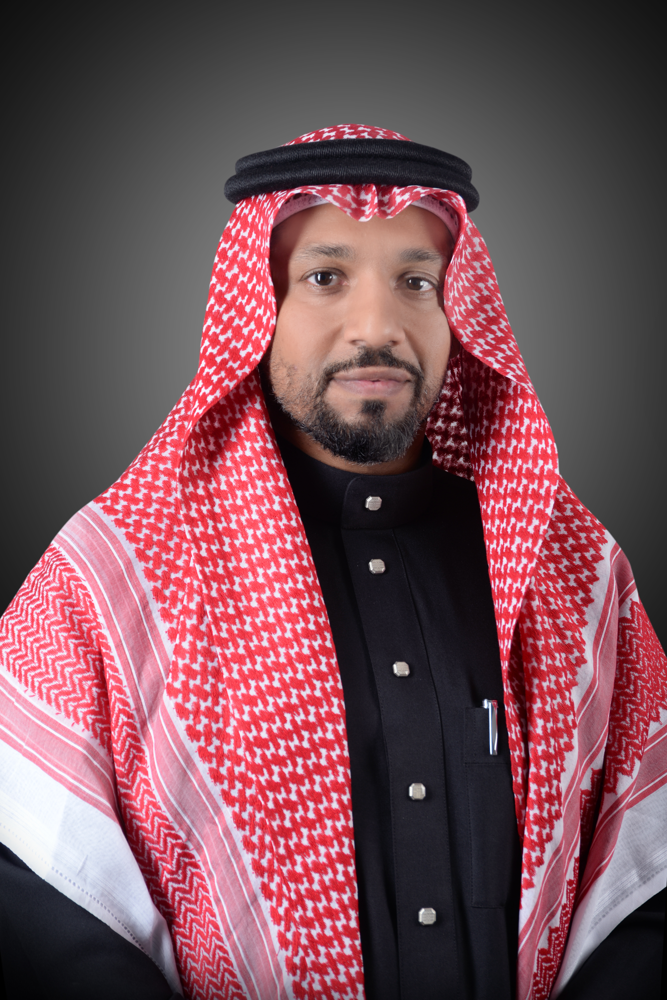

Dr. Abdulaziz Attaallah is an Associate Professor of Computer Science at King Abdulaziz University with a senior academic profile combining software engineering research, academic governance, digital transformation leadership, enterprise systems orientation, and technology strategy. His research expertise spans cybersecurity, artificial intelligence, blockchain applications, usable security, IoT/IoHT, healthcare informatics, big data security, and decision-support systems.
He has extensive experience in teaching, curriculum development, academic advising, research supervision, software architecture, secure systems, and leading university digital platforms.
الدكتور عبدالعزيز عطاءالله أستاذ مشارك في علوم الحاسبات بجامعة الملك عبدالعزيز، ويتمتع بخبرة أكاديمية وقيادية تجمع بين البحث في هندسة البرمجيات، والحوكمة الأكاديمية، وقيادة التحول الرقمي، وتوجيه الأنظمة المؤسسية، واستراتيجية التقنية. تمتد خبراته البحثية إلى الأمن السيبراني، والذكاء الاصطناعي، وتطبيقات البلوك تشين، وأمن الاستخدام، وإنترنت الأشياء، والمعلوماتية الصحية، وأمن البيانات الضخمة، ونماذج دعم القرار.
Computer Science Department, King Abdulaziz University
2024 – Present
Faculty of Computing and Information Technology, KAU
2017 – 2024
Center of the University Knowledge Portal, KAU
2020 – 2021
University Knowledge Portal Center
2019 – 2020
Computer Science Department
2018 – 2019
Computer Science Department
2017 – Present
Strategic planning, technology modernization, innovation management, and transformation leadership.
Aligning technology initiatives with institutional objectives and designing end-to-end solutions.
Requirements elicitation, stakeholder engagement, business process analysis, and system modeling.
Software design, distributed systems, secure software systems, and enterprise application integration.
Project planning, risk management, platform governance, and execution oversight.
Curriculum development, outcome-based education, research supervision, and accreditation activities.
CPCS-351 Software Engineering I
CPCS-353 Software Engineering Practices
CPCS-454 Object-Oriented Analysis and Design
CPCS-202 Programming I
CPCS-203 Programming II
CPCS-206 Introduction to Programming and Visual Basic
CPCS-336 Introduction to Artificial Intelligence
CPCS-498 Senior Project I
CPCS-499 Senior Project II
CPCS-699 Master’s Research
CPCS-323 Summer Workplace Training
King Abdulaziz University
Jeddah, Saudi Arabia